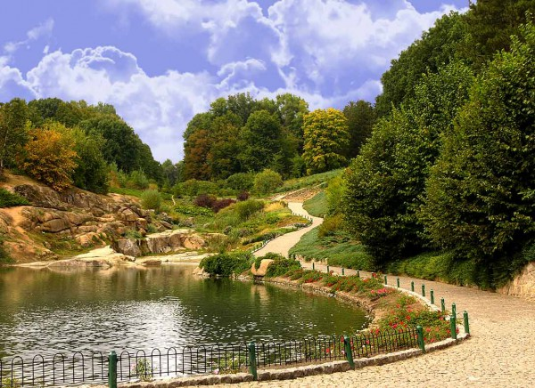
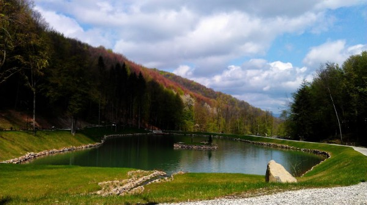
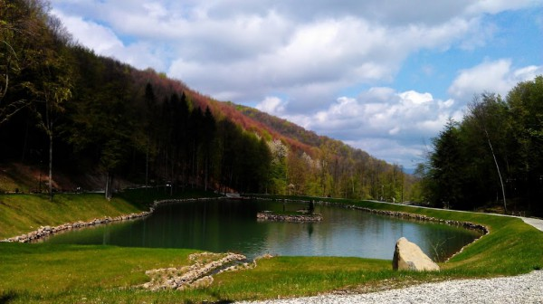

Парки України


 

Дендропарк Софіївка, Умань, Черкаська обл.
Один з найвідоміших в Україні паркiв у заснований в 1796 р. власником міста Умань, польським магнатом Станіславом Потоцьким, названий на честь його дружини Софії і подарований їй же на іменини. Був створений в майже безлісій місцевості розділеною рiчкою Кам'янкою, силами кріпаків. На сьогоднішній день це місце щороку відвідує близько 500 тис. чоловік. Його площа становить 179 га, і він є пам'яткою ландшафтного типу світового садово-паркового мистецтва кінця XVIII - першої половини XIX ст. Тут росте понад 3300 різновидів місцевих і екзотичних рослин, серед яких болотний кипарис, сосна Веймутова, тюльпанове дерево, платан, гiнкго тощо. А також є безліч старовинних альтанок, містків, фонтанів, павільйонів і мишних куточків. Ідеальною порою року для поїздки є весна або осінь, хоча потрібно брати до уваги, що у свята там завжди дуже багато людей. На вході краще купити путівник, щоб нічого не пропустити.